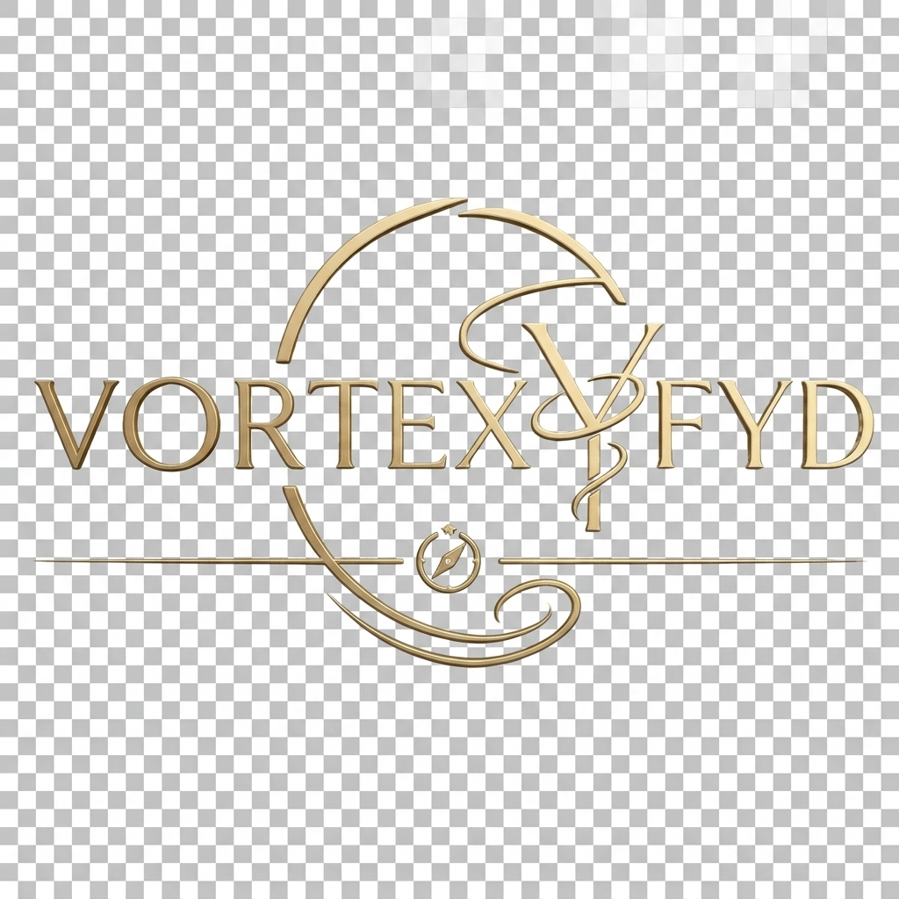

事業計画書
Digital Solutions & Education Studio
提出日 2026年4月1日
屋号 VORTEX FYD
代表者 田中 嗣朗
目次
- 会社概要
- 経営理念・ビジョン
- 事業の詳細内容
- 市場環境と自社の強み
- 収益モデル
- 銀行口座開設の目的と用途
- 中長期計画
1. 会社概要
| 屋号 |
VORTEX FYD（ヴォルテックス・エフワイディー） |
| 代表者 |
田中 嗣朗（Tanaka Tsuguro） |
| 所在地 |
〒150-0043 東京都渋谷区道玄坂1-10-8 渋谷道玄坂東急ビル2F-C |
| 設立（開業）日 |
2026年4月1日（準備開始：2025年4月） |
| 主な事業内容 |
モバイルアプリケーション開発、デジタルメディア運営、教育支援、ビジネスコンサルティング（医療DX準備中） |
2. 経営理念・ビジョン
「デジタルで人はもっと進化できる：実用的な知見と創造」
VORTEX FYDは、最先端のエンジニアリングと人間中心の設計を融合させ、個人の能力を拡張し、社会の課題を解決するソリューションを提供することをミッションとしています。単なるツールの提供に留まらず、利用者のライフスタイルや思考プロセスを豊かにする「体験」の創造を目指しています。
3. 事業の詳細内容
① 自社プロダクト開発事業（Digital Lab）
AIや最新技術を活用した実用的なアプリケーションを開発・提供しています。
- StockEcho: 投資家の思考を音声で即座に記録し、企業情報を一括管理する投資支援ツール。
- VortexNote: 音声入力とAI要約を組み合わせた、次世代のタスク管理・ボイスエディタ。
- NForgEt: 忘却曲線を考慮したアルゴリズムを搭載した、AI辞書連動型言語学習プラットフォーム。
- GammaCare / ARSS: 脳科学に基づいた40Hzオーディオ変調技術を用いた、認知機能ケア・活性化支援アプリ。
- FRESTRO: レコードOCRを活用し、家庭の食品ロスをAIで管理・削減するエコシステム。
② メディア・教育事業
「言語の壁を超え、視点を広げる」をテーマに、デジタルメディアを通じた教育コンテンツの提供を行っています。
- 英語学習メソッドの提供（YouTube、各種SNS、Webメディア）。
- デジタル技術の活用リテラシー向上を目的とした情報発信。
③ コンサルティング事業（2026年度中開始予定）
- 医療DXコンサルティング: 医療現場のデジタル化、業務効率化、およびAI活用に関する導入支援。
- 技術コンサルティング: スタートアップや中小企業向けのモバイル戦略・DX戦略の立案。
4. 市場環境と自社の強み
国内外でのAI市場、メンタルヘルス・ヘルスケア分野、および生活効率化（DX）需要は急速に拡大しており、高品質なモバイルソリューションの必要性が高まっています。
自社の強み
- 多角的な開発力: 金融、医療、教育、環境という異なるドメインの知見を一つのエコシステムとして統合できるエンジニアリング能力。
- 徹底したユーザー視点: 最小限の入力で最大限の効果を得る（UXの自動化）設計思想。
5. 収益モデル
- ライセンス販売: アプリケーションのBtoC販売（買い切りモデルおよびサブスクリプションモデル）。
- コンサルティング報酬: 法人向けDX支援におけるプロジェクト単位の報酬。
- 広告・プロモーション収益: 自社メディアにおけるタイアップおよび広告枠の運用。
6. 銀行口座開設の目的と用途
事業の継続的な発展と透明性の確保のため、以下の目的で専用口座の開設を希望いたします。
- 売上の受取: 各アプリストアからの売上入金、およびコンサルティング報酬の決済用。
- 経費の支払い: 開発サーバー（AWS/Google Cloud等）の維持費、API利用料（OpenAI等）、外注開発費、広告宣伝費、およびオフィス維持費の決済用。
7. 中長期計画
- 2026年度: 既存プロダクト（Beta版）の正式版リリースおよび医療DXコンサルティングの本格始動。
- 2027年度: 各プロダクトのグローバル展開（英語版対応済み）の加速と、売上目標300%成長を目指す。
- 2028年度: 組織の法人化（株式会社化）および、新規AIソリューションの大型R&Dの開始。